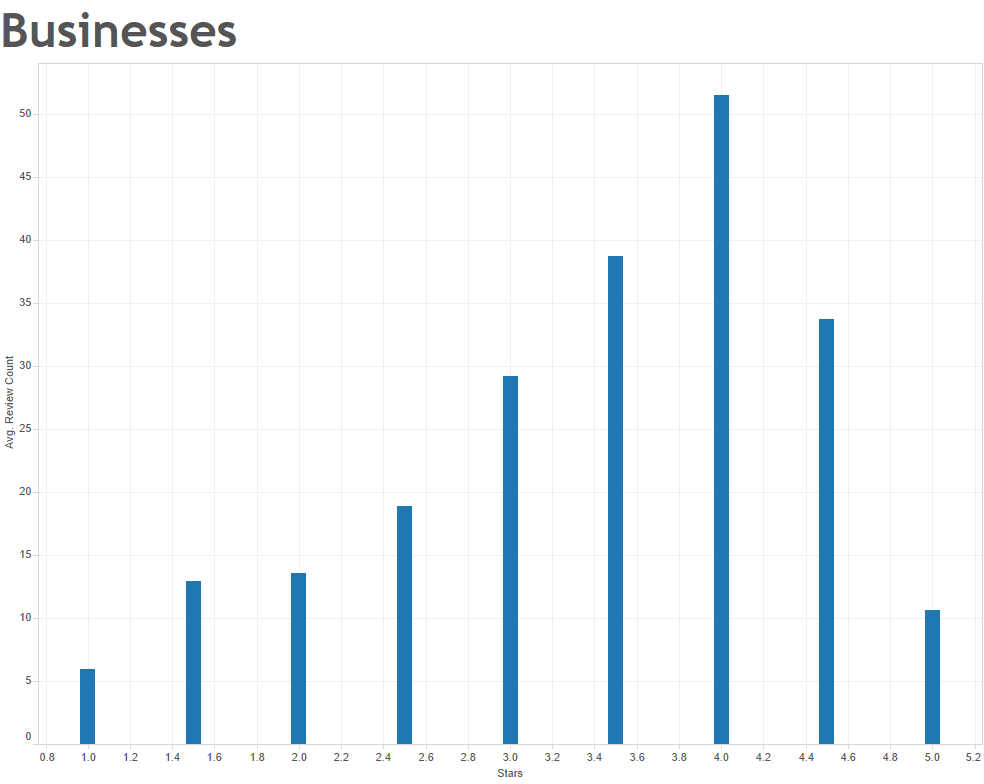
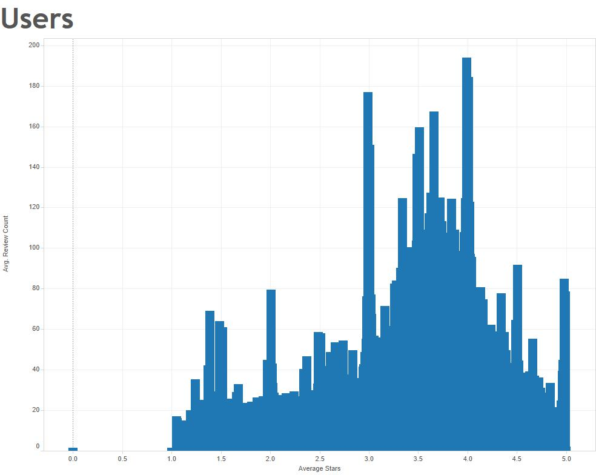

Yelp Data


For my final report, I will be analyzing and visualizing a large dataset from Yelp. This dataset contains millions of businesses, profiles, reviews, checkin data, and tip data. There is a seperate, sub-dataset for each of these categories. For the above visualization, I have seperately taken all profiles for businesses and users, and compared their average rating to the number of reviews. For businesses this indicates reviews they recieved, and for users this indicates reviews given.
This comparison obviously follows a similar trend amongst both users and businesses, meaning that in general, more active Yelp profiles are rated better. This data shows the basis of my project, that participation on the Yelp social media platform directly correlates with positive reviews. My initial analysis of the data is beginning to indicate that the more populated a given business's profile on Yelp, by both number of reviews, and available information about the business, the better reviewed that business is. This correlation would definitely indicate a serious bias which I intend to explore further in my final report